The twisted arrow category is the unstraightening of the Hom-functor. Informally, its objects are morphisms \(x\to y\) of \(C\), and a morphism between two such objects is a twisted commutative square: it is contravariant in the source and covariant in the target. The projection \(\Tw(C)\to C\catop\times C\) records these two endpoints. Besides packaging all morphisms of \(C\) into a single category, this construction will control the naturality of the Yoneda isomorphism and later provide the indexing category for ends and density formulas.
12.2.1 Definition and fibers
Definition 12.2.1 (Twisted arrow category). For a small category \(C\), we define the left fibration \(\Tw(C) \to C\catop \times C\) as the one classified by the Hom-functor:
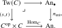
Lemma 12.2.2. If \(C\) is a small category, so is \(\Tw(C)\).
Proof
The left fibration \(\Tw(C) \to C\catop \times C\) has small fibers, and its base is small by Proposition 12.1.13. Hence its total category is small.
Proposition 12.2.3 (Functoriality of twisted arrow categories). There is a functor \[ \Tw\colon\Cat\longrightarrow\Cat \] and a natural transformation \[ (s,t)\colon\Tw\longrightarrow(-)\catop\times\id_{\Cat} \] whose component at a category \(C\) is the left fibration \((s,t)\colon\Tw(C)\to C\catop\times C\) of Definition 12.2.1.
Proof
Recall from Construction 12.1.20 the subcategories \(\CoRep \hookrightarrow \LFib \hookrightarrow \Fun([1],\Cat)\). We may think of the inclusion \(\CoRep\hookrightarrow\Fun([1],\Cat)\) as a natural transformation from the source evaluation \(\ev_0\colon\CoRep\to\Cat\) to the target evaluation
\(\ev_1\colon\CoRep\to\Cat\). Unstraightening gives a cocartesian functor of the form bellow.
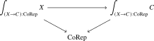
The right-hand total category is the pullback \(\CoRep\times_{\Cat}\Cat_{\bullet}\), formed using \(\ev_1\) and \(\pi_{\univ}\). Its projection to \(\Cat\) is therefore the product of the cocartesian fibrations classifying \((-)\catop\) and \(\id_{\Cat}\). Straightening the displayed functor over \(\Cat\) consequently gives a natural transformation \[ (s,t)\colon\Tw\longrightarrow(-)\catop\times\id_{\Cat}, \] where \(\Tw\colon\Cat\to\Cat\) classifies the left-hand composite fibration.
It remains to identify its component at \(C\). The fiber of \(\CoRep\to\Cat\) over \(C\) is \(C\catop\), and the inclusion into \(\LFib(C)\) is the co-Yoneda embedding by Proposition 12.1.21. Thus the component is \[ \int_{x:C\catop}C_{x/}\longrightarrow C\catop\times C. \] This is a cocartesian functor over \(C\catop\) whose fiber at \(x\) is the left fibration \(C_{x/}\to C\). Transport in \(C\catop\) gives functors between these left fibrations over \(C\), which preserve cocartesian morphisms. Hence Proposition 6.5.15 shows that the displayed functor is a cocartesian fibration. Its fibers are animae, so it is a left fibration, classified by the uncurrying of \(h_{C\catop}\), namely \(\Hom_C\). It therefore agrees with the defining left fibration \(\Tw(C)\to C\catop\times C\).
For a functor \(f\colon C\to D\), cocartesian transport in \(\CoRep\) is given by left Kan extension. Its unit on a corepresentable corresponds to the canonical functor \(C_{x/}\to D_{f(x)/}\) from Proposition 12.1.9. Consequently, \(\Tw(f)\) restricts to this functor on the source fibers and sends \(\id_x\) to \(\id_{f(x)}\).
Proposition 12.2.4. The fibers of both projections \(s\colon \Tw(C) \to C\catop\) and \(t\colon \Tw(C) \to C\) have initial objects.
Proof
We have a commutative diagram
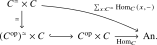 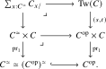
Now consider an object \(y\) of \(C\) and let \(\Tw(C)_y\) denote the fiber of \(t\colon \Tw(C) \to C\) at \(y\):
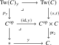 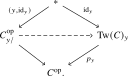 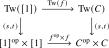 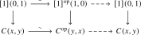
Remark 12.2.5. Given any object \(x\) of \(C\) seen as an object of \(C\catop\), the proof of the preceding proposition shows that the fiber of the target functor \[ t\colon \Tw(C)\to C \] at \(x\) is equivalent to \((C\catop)_{x/}\). Using Proposition 12.1.16, this means that we have a canonical isomorphism over \(C\catop\) of the form \[ (C_{/x})\catop\iso \Tw(C)_x\, . \]
Corollary 12.2.6. The maps \(s\) and \(t\) induce equivalences \[ \Pi_{\infty}(C\catop) \xleftarrow{\Pi_{\infty}(s)} \Pi_{\infty}(\Tw(C)) \xrightarrow{\Pi_{\infty}(t)} \Pi_{\infty}(C). \]
Proof
Both \(s\) and \(t\) are cocartesian fibrations: they are the Grothendieck constructions of the functors \(x\mapsto C_{x/}\) on \(C\catop\) and \(y\mapsto (C_{/y})\catop\) on \(C\), respectively. Consequently they are proper. For either projection \(f\), the inclusion of the fiber \(X_y\to X_{/y}\) is terminal. By Proposition 12.2.4, the fiber has an initial object and is therefore weakly contractible. Thus every relative slice \(X_{/y}\) is weakly contractible, and Corollary 9.5.8 implies that \(\Pi_{\infty}(f)\) is an equivalence.
12.2.2 Relative twisted-arrow formulas
Let \(u\colon C\to D\) be a functor between small categories. We will compare the Hom-functors of \(C\) and \(D\): left Kan extension of \(\Hom_C\) along \(u\) in the second variable gives the functor \((c,d)\mapsto\Hom_D(u(c),d)\). The analogous extension in the first variable gives \((d,c)\mapsto\Hom_D(d,u(c))\). We prove these formulas by showing that the corresponding functors between twisted arrow categories are initial.
Lemma 12.2.7. Consider the functor \(\tilde{u} = ((s,t), \Tw(u))\) defined by
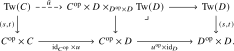
Proof
By virtue of Lemma 9.6.8,
it suffices to show that \(\tilde{u}\) induces an initial functor fiberwise over each object of \(C\catop\). Let \(x\) be an object of \(C\) (and thus an object of \(C\catop\)). The functor induced over \(x\) fits into a diagram of the form
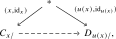
Proposition 12.2.8. Let \(u\colon C\to D\) be a functor between small categories. The adjunction \[ (\id_{C\catop} \times u)_!\colon \Fun(C\catop \times C, \An) \rightleftarrows \Fun(C\catop \times D, \An)\noloc (\id_{C\catop} \times u)^*. \] induces a canonical isomorphism \[ (\id_{C\catop} \times u)_!(\Hom_C) \iso (u\catop \times \id_D)^*(\Hom_D) \] in \(\Fun(C\catop\times D,\An)\).
Proof
This is a direct interpretation of the previous lemma in view of the explicit description of the functor \((\id_{C\catop} \times u)_!\) given by Theorem 9.3.1.
Lemma 12.2.9. Consider the functor \(\bar{u} = ((s,t), \Tw(u))\) defined by
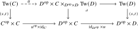
Proof
As in the proof of Lemma 12.2.7,
it suffices to show that \(\bar{u}\) induces an initial functor fiberwise over each object of \(C\). Let \(x\) be an object of \(C\). By Remark 12.2.5,
the functor induced on fibers over \(x\) fits into a diagram of the form
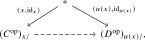
Proposition 12.2.10. Let \(u\colon C\to D\) be a functor between small categories. The adjunction \[ ({u\catop} \times \id_C)_!\colon \Fun(C\catop \times C, \An) \rightleftarrows \Fun(D\catop \times C, \An)\noloc ({u\catop} \times \id_C)^*. \] induces a canonical isomorphism \[ ({u\catop} \times \id_C)_!(\Hom_C) \iso (\id_{D\catop}\times u)^*(\Hom_D) \] in \(\Fun(D\catop\times C,\An)\).
Proof
This is a reformulation of Lemma 12.2.9.
12.2.3 Fully faithful functors
In passing, we record a criterion of fully faithful functors in terms of the twisted arrow category.
Proposition 12.2.11. For a functor \(u\colon C \to D\) between small categories, the following conditions are equivalent:
(1) The functor \(u\) is fully faithful.
(2) The functor \(u_!\colon \Fun(C,\An) \to \Fun(D,\An)\) is fully faithful.
(3) The commutative square
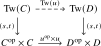
is a pullback square.(4) The functor \(u\catop\colon C\catop\to D\catop\) is fully faithful.
Proof
The equivalence between (1) and (3) follows because both conditions ask the induced map \(C(x,y) \to D(u(x),u(y))\) to be an equivalence for all objects \(x\) and \(y\) of \(C\). The equivalence between (1) and (4) is Lemma 12.1.12, applied to all pairs of objects. The fact that (4) follows from (2) holds by definition of \(u\catop\). It remains to show that (1) implies (2).
Let \(p\colon X \to C\) be a small left fibration, classified by a functor \(F\colon C \to \An\). We may factor \(u \circ p\) as
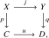 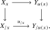 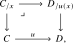
Corollary 12.2.12. Consider the pushout square of categories below.
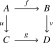
Proof
We may assume that this is a commutative square of small categories (up to a choice of suitable universe). Let us assume that \(f\) is fully faithful. By virtue of Proposition 12.2.11 the functor \[ f_!\colon\Fun(A,\An)\to\Fun(B,\An) \] is fully faithful. In other words, if we consider the induced pullback square the functor \(f_!\) is a left adjoint section of \(f^*\). Proposition 4.4.15 thus tells us that the functor \(g^*\) has a left adjoint section, i.e. the functor \(g_!\) is fully faithful. Another application of Proposition 12.2.11 implies that the functor \(g\) itself is fully faithful.